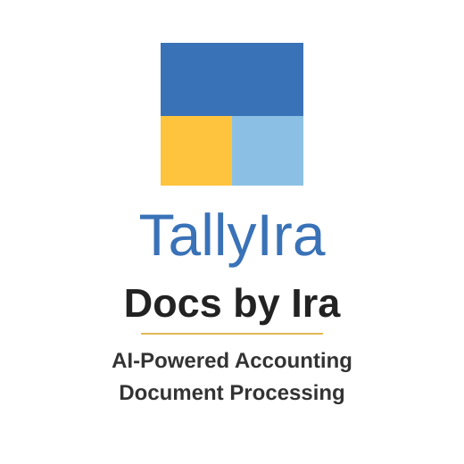

← All Products
Tally Software Services
Docs by Ira
Use AI-powered document processing to scan or upload transaction documents and prepare draft vouchers for review in TallyPrime.
Scan or uploadUse invoice images and PDF documents.
Reduce manual workExtract transaction information automatically.
Review firstValidate draft entries before posting.

How It Helps
A faster route from document to voucher
1
Capture documents
Scan with the TallyIra app or use supported invoice images and PDF files.
2
Extract information
AI identifies relevant invoice and transaction information from the document.
3
Create draft vouchers
Bring processed documents into TallyPrime as draft transactions for verification.
4
Review and post
Your team checks the extracted values, makes corrections and completes the voucher.
Best Fit
For teams handling repetitive invoice entry
Docs by Ira is useful when supplier invoices or transaction documents require regular manual entry into TallyPrime.
- Accounts payable and finance teams
- Businesses processing supplier invoices
- Accountants seeking faster voucher creation
- Teams wanting controlled AI assistance
Want to see Docs by Ira in action?
MCPL can confirm prerequisites, help with setup and demonstrate the supported workflow.